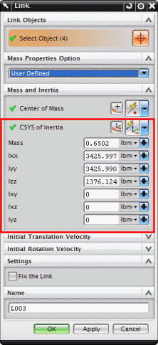

软件将使用几何体自动计算连杆的惯性属性。
但是，您也可以使用用户定义的质量属性选项来手动定义惯性属性。

对于各个连杆，您可以通过指定惯性的 CSYS 来为惯性力矩定义原点和坐标系。
您也可以定义惯性矩值(Ixx, Iyy, Izz) 与惯性乘积值 (Ixy, Ixz, Iyz)。
x、y、z 为无穷小体积质量中心的位移分量，从惯性的 CSYS 原点处开始测量。
Ixx、Iyy 以及 Izz 的值必须是正数。